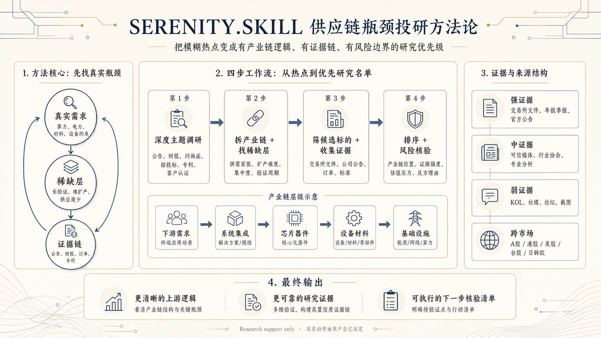

投研与行业研究
从热点判断到证据验证，把行业研究拆成可重复的研究步骤。
AI SKILL LIBRARY
研究、内容、开发与运营。每个技能包都把方法、工具和具体技能组织成一条可以开始执行的路径。
01 / TASK SCENARIOS
进入结果页后可按行业进一步筛选
02 / FEATURED PACKAGES
包内技能在总览页逐项展开
从热点判断到证据验证，把行业研究拆成可重复的研究步骤。
将原始材料整理为可信、清楚且可发布的内容。
从模糊需求、规格到实现和复审的完整工程路径。
让跨会话、跨角色的工作状态可追踪、可继续。
FEATURED SKILL
供应链瓶颈投研方法。作为“投研与行业研究”技能包内的单项技能，可从热点判断一路推进到证据验证。

SKILL PACKAGE INDEX
更像一册可连续阅读的工作方法目录。
RESEARCH
用于把不确定的问题拆成证据、判断和可执行结论。
热点、产业链、证据与风险边界。
信息搜集、证据分级与风险复核。
市场结构、竞品格局和机会判断。
CONTENT
用于把碎片信息转为清晰、可信和可复用的表达。
从材料到文章，从结构到发布。
PACKAGE FINDER
从行业热点、产业链拆解到证据验证的系统研究包；包含 Serenity.skill。
定义范围、收集信息、分级证据并输出风险结论。
建立市场结构、竞争格局与可验证的机会判断。